F.25 Harmonic Conjugates — Folios
Archival manuscript scans and diplomatic transcriptions from seelig ’s
notebooks for F.25 (Harmonic Conjugates) (SeeligNotebooks ).
Folio 0140 (Page 1 of 28): Orthogonal Circles on Line AXBY (Page 1)
[Folio 0140]
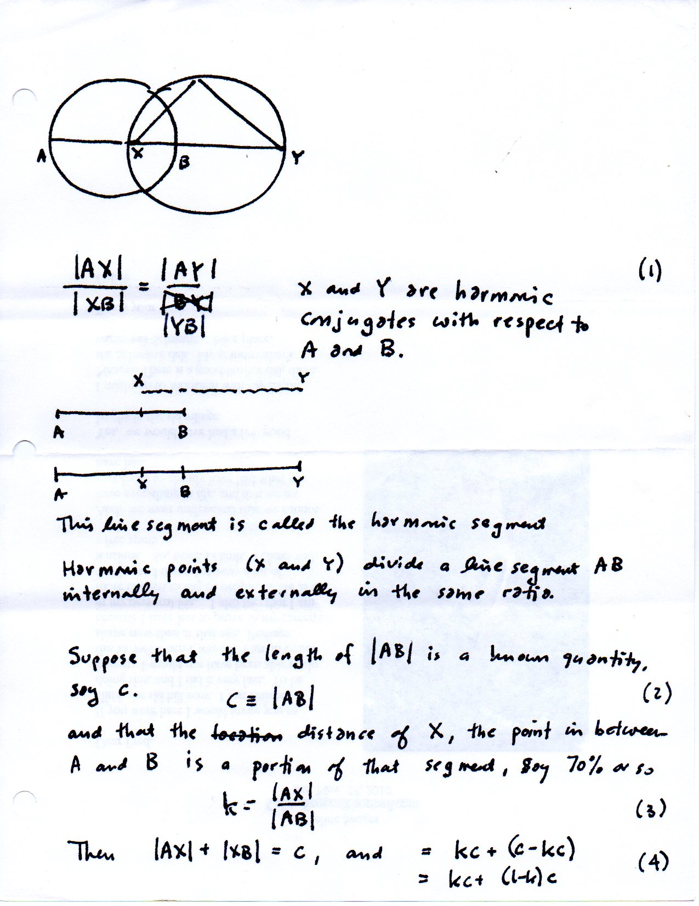
Folio 0140 0140.jpg resources/seelig/25_harmonic-conjugates
Diplomatic Mathematical & Geometric Transcription
Diplomatic Transcription — Folio 0140 (0140.jpg
Defines harmonic conjugates \(|AX|/|XB| = |AY|/|YB|\) with \(c = |AB|\) and \(k = |AX|/|AB|\) .
\[\frac{|AC|}{|CB|} = \frac{|AD|}{|BD|} = k = \frac{1 + \kappa}{1 - \kappa}, \qquad |MC| \cdot |MD| = x y = r^2, \qquad \frac{2}{|AB|} = \frac{1}{|AC|} + \frac{1}{|AD|}\]
Editorial & Symbolic Notes
Archival scan 0140.jpg F.25 Harmonic Conjugates (Page 1 of 28). Companion OpenDocument worksheet(s): Harmonic Conjugates HC Tables Apollonian Circles Coaxial Circles III.36 VI.3
Folio 0141 (Page 2 of 28): Internal & External Division Ratios (Page 2)
[Folio 0141]
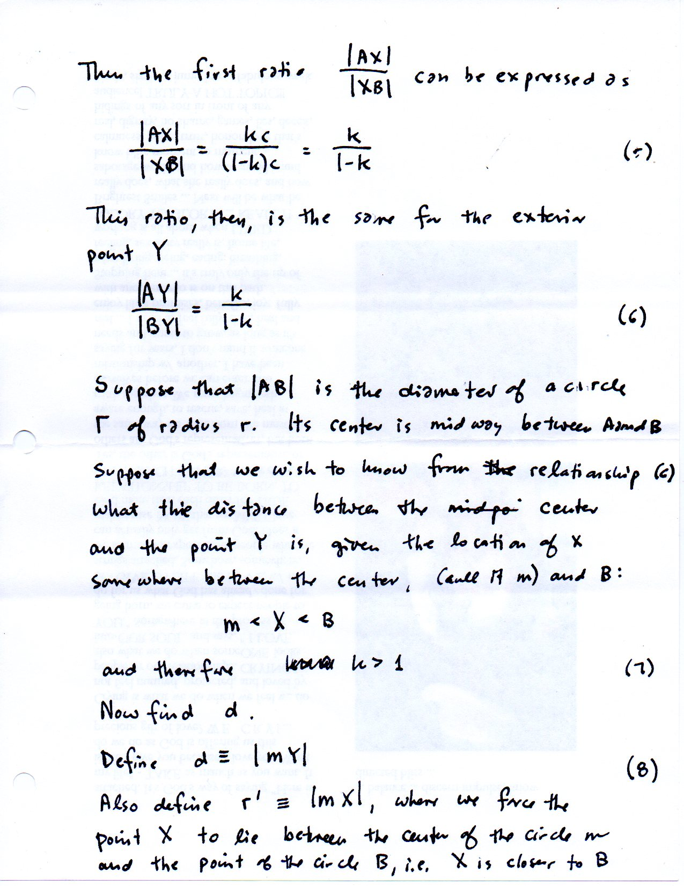
Folio 0141 0141.jpg resources/seelig/25_harmonic-conjugates
Diplomatic Mathematical & Geometric Transcription
Diplomatic Transcription — Folio 0141 (0141.jpg
Expresses the division ratios in terms of \(k/(1-k)\) on circle \(\Gamma(m, r)\) with \(r' = |mX|, d = |mY|\) .
\[\Pi_+ = \frac{1}{\kappa} + \kappa, \quad \Pi_- = \frac{1}{\kappa} - \kappa, \quad \Pi_+^2 - \Pi_-^2 = 4, \quad R = \frac{r}{2}\Pi_-, \quad d = \frac{r}{2}\Pi_+, \quad p = r\frac{\Pi_-}{\Pi_+}\]
Editorial & Symbolic Notes
Archival scan 0141.jpg F.25 Harmonic Conjugates (Page 2 of 28). Companion OpenDocument worksheet(s): Harmonic Conjugates HC Tables Apollonian Circles Coaxial Circles III.36 VI.3
Folio 0142 (Page 3 of 28): Symmetrical Ratio gamma = (r+r’)/(r-r’) = (d+r)/(d-r) (Page 3)
[Folio 0142]
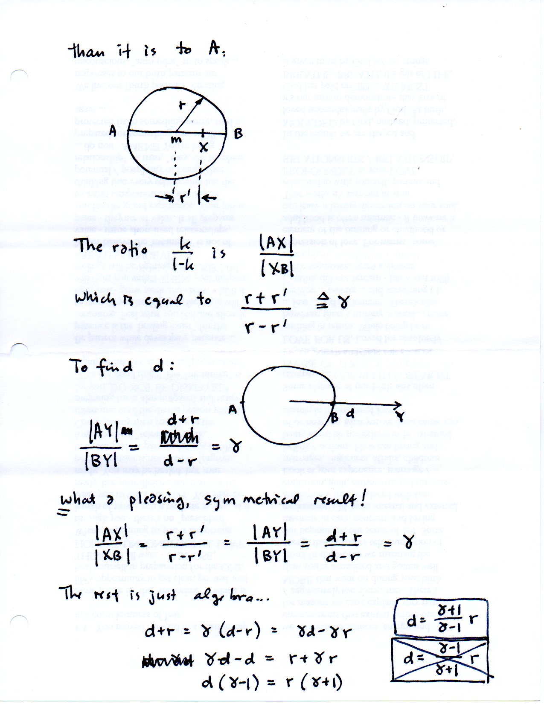
Folio 0142 0142.jpg resources/seelig/25_harmonic-conjugates
Diplomatic Mathematical & Geometric Transcription
Diplomatic Transcription — Folio 0142 (0142.jpg
Proves \(d = \frac{\gamma+1}{\gamma-1}r\) (‘What a pleasing, symmetrical result!’ ).
\[\frac{|AC|}{|CB|} = \frac{|AD|}{|BD|} = k = \frac{1 + \kappa}{1 - \kappa}, \qquad |MC| \cdot |MD| = x y = r^2, \qquad \frac{2}{|AB|} = \frac{1}{|AC|} + \frac{1}{|AD|}\]
Editorial & Symbolic Notes
Archival scan 0142.jpg F.25 Harmonic Conjugates (Page 3 of 28). Companion OpenDocument worksheet(s): Harmonic Conjugates HC Tables Apollonian Circles Coaxial Circles III.36 VI.3
Folio 0143 (Page 4 of 28): Worked Example r = 1, k = 0.7 (Page 4)
[Folio 0143]
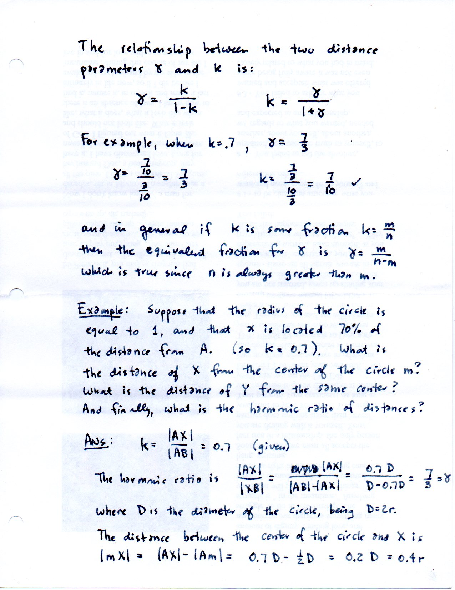
Folio 0143 0143.jpg resources/seelig/25_harmonic-conjugates
Diplomatic Mathematical & Geometric Transcription
Diplomatic Transcription — Folio 0143 (0143.jpg
Computes \(\gamma = 7/3\) and \(|mX| = 0.4r\) .
\[\Pi_+ = \frac{1}{\kappa} + \kappa, \quad \Pi_- = \frac{1}{\kappa} - \kappa, \quad \Pi_+^2 - \Pi_-^2 = 4, \quad R = \frac{r}{2}\Pi_-, \quad d = \frac{r}{2}\Pi_+, \quad p = r\frac{\Pi_-}{\Pi_+}\]
Editorial & Symbolic Notes
Archival scan 0143.jpg F.25 Harmonic Conjugates (Page 4 of 28). Companion OpenDocument worksheet(s): Harmonic Conjugates HC Tables Apollonian Circles Coaxial Circles III.36 VI.3
Folio 0144 (Page 5 of 28): Inversion Identity r^2 = d*r’ (Page 5, citing Ogilvy 1969, p. 19)
[Folio 0144]
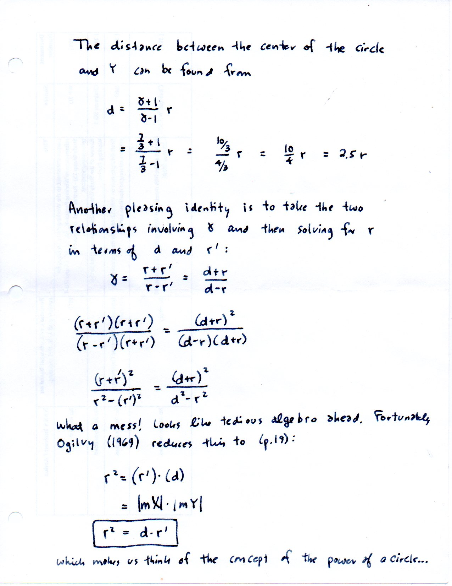
Folio 0144 0144.jpg resources/seelig/25_harmonic-conjugates
Diplomatic Mathematical & Geometric Transcription
Diplomatic Transcription — Folio 0144 (0144.jpg
Completes example (\(d = 2.5r\) ) and proves \(r^2 = |mX|\cdot |mY|\) .
\[\frac{|AC|}{|CB|} = \frac{|AD|}{|BD|} = k = \frac{1 + \kappa}{1 - \kappa}, \qquad |MC| \cdot |MD| = x y = r^2, \qquad \frac{2}{|AB|} = \frac{1}{|AC|} + \frac{1}{|AD|}\]
Editorial & Symbolic Notes
Archival scan 0144.jpg F.25 Harmonic Conjugates (Page 5 of 28). Companion OpenDocument worksheet(s): Harmonic Conjugates HC Tables Apollonian Circles Coaxial Circles III.36 VI.3
Folio 0145 (Page 6 of 28): Ogilvy’s Theorem 8 on Orthogonal Circles (Page 6, Ogilvy p. 20)
[Folio 0145]
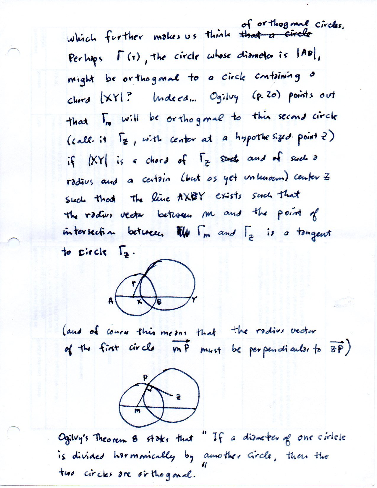
Folio 0145 0145.jpg resources/seelig/25_harmonic-conjugates
Diplomatic Mathematical & Geometric Transcription
Diplomatic Transcription — Folio 0145 (0145.jpg
Proves that any circle dividing a diameter harmonically is orthogonal to the base circle (\(\vec{mP} \perp \vec{zP}\) ).
\[\Pi_+ = \frac{1}{\kappa} + \kappa, \quad \Pi_- = \frac{1}{\kappa} - \kappa, \quad \Pi_+^2 - \Pi_-^2 = 4, \quad R = \frac{r}{2}\Pi_-, \quad d = \frac{r}{2}\Pi_+, \quad p = r\frac{\Pi_-}{\Pi_+}\]
Editorial & Symbolic Notes
Archival scan 0145.jpg F.25 Harmonic Conjugates (Page 6 of 28). Companion OpenDocument worksheet(s): Harmonic Conjugates HC Tables Apollonian Circles Coaxial Circles III.36 VI.3
Folio 0146 (Page 7 of 28): Intersection Angle alpha of Two Circles (Page 7)
[Folio 0146]
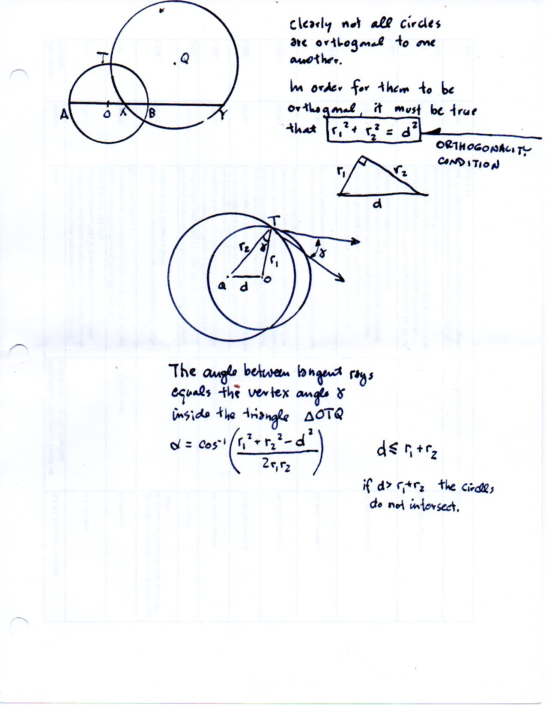
Folio 0146 0146.jpg resources/seelig/25_harmonic-conjugates
Diplomatic Mathematical & Geometric Transcription
Diplomatic Transcription — Folio 0146 (0146.jpg
Writes \(\alpha = \cos^{-1}\left(\frac{r_1^2+r_2^2-d^2}{2r_1r_2}\right)\) reducing to \(r^2+R^2=d^2\) at \(90^\circ\) .
\[\frac{|AC|}{|CB|} = \frac{|AD|}{|BD|} = k = \frac{1 + \kappa}{1 - \kappa}, \qquad |MC| \cdot |MD| = x y = r^2, \qquad \frac{2}{|AB|} = \frac{1}{|AC|} + \frac{1}{|AD|}\]
Editorial & Symbolic Notes
Archival scan 0146.jpg F.25 Harmonic Conjugates (Page 7 of 28). Companion OpenDocument worksheet(s): Harmonic Conjugates HC Tables Apollonian Circles Coaxial Circles III.36 VI.3
Folio 0147 (Page 8 of 28): Harmonic Conjugates Master Summary (citing Euclid VI.3, Heath p. 198)
[Folio 0147]
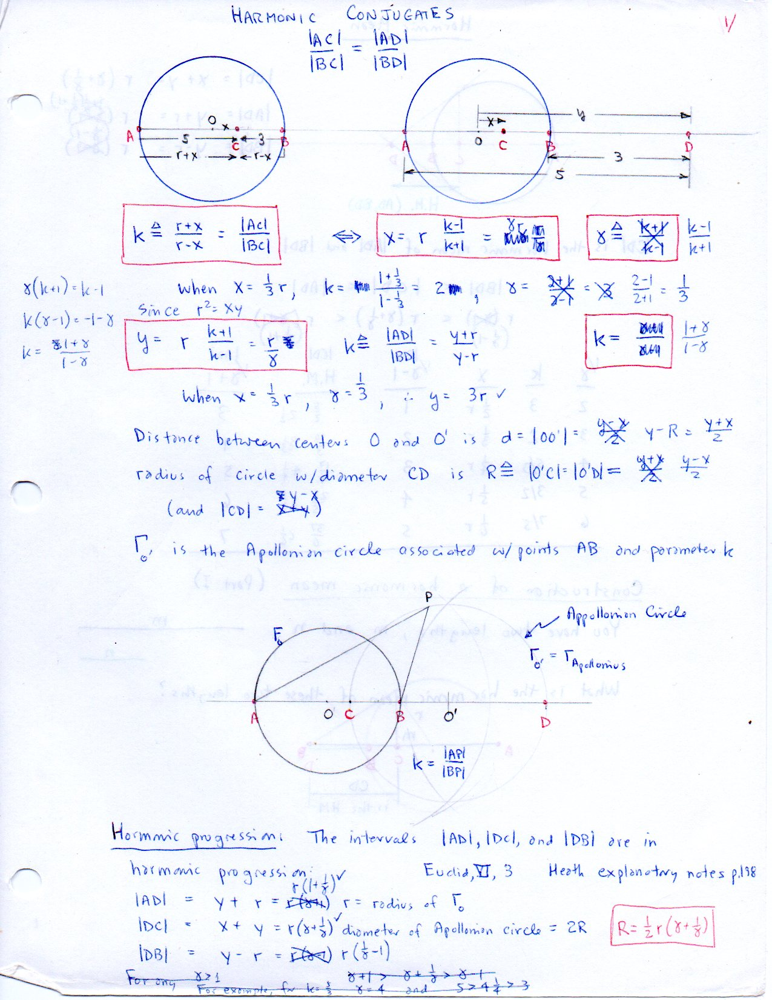
Folio 0147 0147.jpg resources/seelig/25_harmonic-conjugates
Diplomatic Mathematical & Geometric Transcription
Diplomatic Transcription — Folio 0147 (0147.jpg
Summarizes \(k, x, y, \gamma, d, R\) , the Apollonian circle \(\Gamma_{O'}\) , and the harmonic progression \(|AD|, |DC|, |DB|\) .
\[\Pi_+ = \frac{1}{\kappa} + \kappa, \quad \Pi_- = \frac{1}{\kappa} - \kappa, \quad \Pi_+^2 - \Pi_-^2 = 4, \quad R = \frac{r}{2}\Pi_-, \quad d = \frac{r}{2}\Pi_+, \quad p = r\frac{\Pi_-}{\Pi_+}\]
Editorial & Symbolic Notes
Archival scan 0147.jpg F.25 Harmonic Conjugates (Page 8 of 28). Companion OpenDocument worksheet(s): Harmonic Conjugates HC Tables Apollonian Circles Coaxial Circles III.36 VI.3
Folio 0148 (Page 9 of 28): Angle-Bisector & Tangent-Polar Properties (citing Ogilvy p. 27)
[Folio 0148]
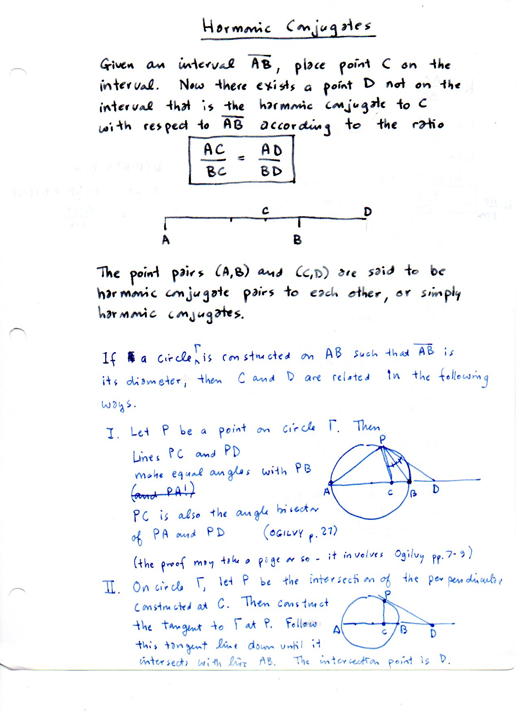
Folio 0148 0148.jpg resources/seelig/25_harmonic-conjugates
Diplomatic Mathematical & Geometric Transcription
Diplomatic Transcription — Folio 0148 (0148.jpg
Lists circle properties I (\(PC\) bisects \(\angle APD\) ) and II (perpendicular at \(C\) meets \(\Gamma\) at \(P\) , where tangent meets \(AB\) at \(D\) ).
\[\frac{|AC|}{|CB|} = \frac{|AD|}{|BD|} = k = \frac{1 + \kappa}{1 - \kappa}, \qquad |MC| \cdot |MD| = x y = r^2, \qquad \frac{2}{|AB|} = \frac{1}{|AC|} + \frac{1}{|AD|}\]
Editorial & Symbolic Notes
Archival scan 0148.jpg F.25 Harmonic Conjugates (Page 9 of 28). Companion OpenDocument worksheet(s): Harmonic Conjugates HC Tables Apollonian Circles Coaxial Circles III.36 VI.3
Folio 0149 (Page 10 of 28): Barycentric/Coordinate Isolation of C and D
[Folio 0149]
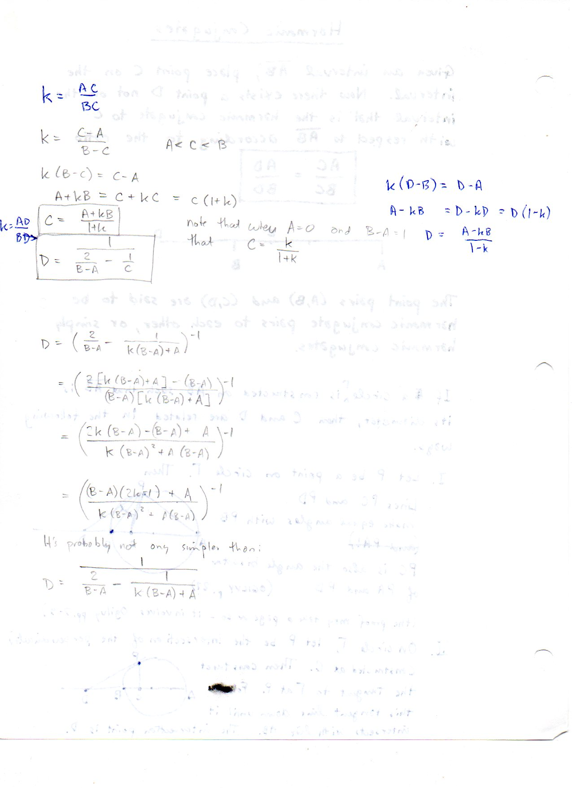
Folio 0149 0149.jpg resources/seelig/25_harmonic-conjugates
Diplomatic Mathematical & Geometric Transcription
Diplomatic Transcription — Folio 0149 (0149.jpg
Derives \(C = (A+kB)/(1+k)\) and harmonic reciprocal formulas for \(D\) .
\[\Pi_+ = \frac{1}{\kappa} + \kappa, \quad \Pi_- = \frac{1}{\kappa} - \kappa, \quad \Pi_+^2 - \Pi_-^2 = 4, \quad R = \frac{r}{2}\Pi_-, \quad d = \frac{r}{2}\Pi_+, \quad p = r\frac{\Pi_-}{\Pi_+}\]
Editorial & Symbolic Notes
Archival scan 0149.jpg F.25 Harmonic Conjugates (Page 10 of 28). Companion OpenDocument worksheet(s): Harmonic Conjugates HC Tables Apollonian Circles Coaxial Circles III.36 VI.3
Folio 0150 (Page 11 of 28): Reciprocal Identities for k, k_2, k_3
[Folio 0150]
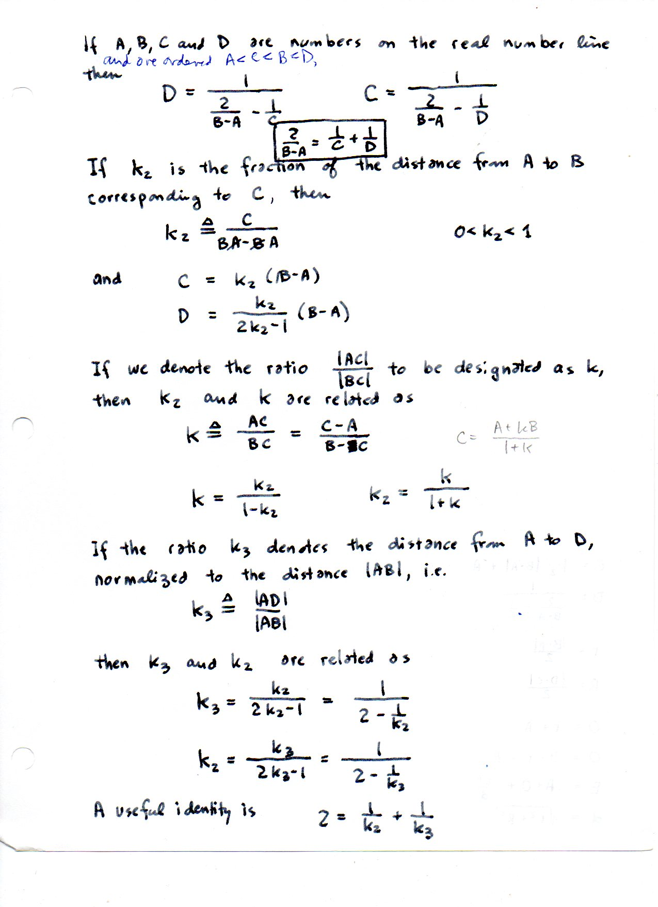
Folio 0150 0150.jpg resources/seelig/25_harmonic-conjugates
Diplomatic Mathematical & Geometric Transcription
Diplomatic Transcription — Folio 0150 (0150.jpg
Proves \(\frac{2}{B-A} = \frac{1}{C} + \frac{1}{D}\) and \(2 = \frac{1}{k_2} + \frac{1}{k_3}\) .
\[\frac{|AC|}{|CB|} = \frac{|AD|}{|BD|} = k = \frac{1 + \kappa}{1 - \kappa}, \qquad |MC| \cdot |MD| = x y = r^2, \qquad \frac{2}{|AB|} = \frac{1}{|AC|} + \frac{1}{|AD|}\]
Editorial & Symbolic Notes
Archival scan 0150.jpg F.25 Harmonic Conjugates (Page 11 of 28). Companion OpenDocument worksheet(s): Harmonic Conjugates HC Tables Apollonian Circles Coaxial Circles III.36 VI.3
Folio 0151 (Page 12 of 28): Summary Coordinate Box for C, D, r, R, O, O’, E, d
[Folio 0151]
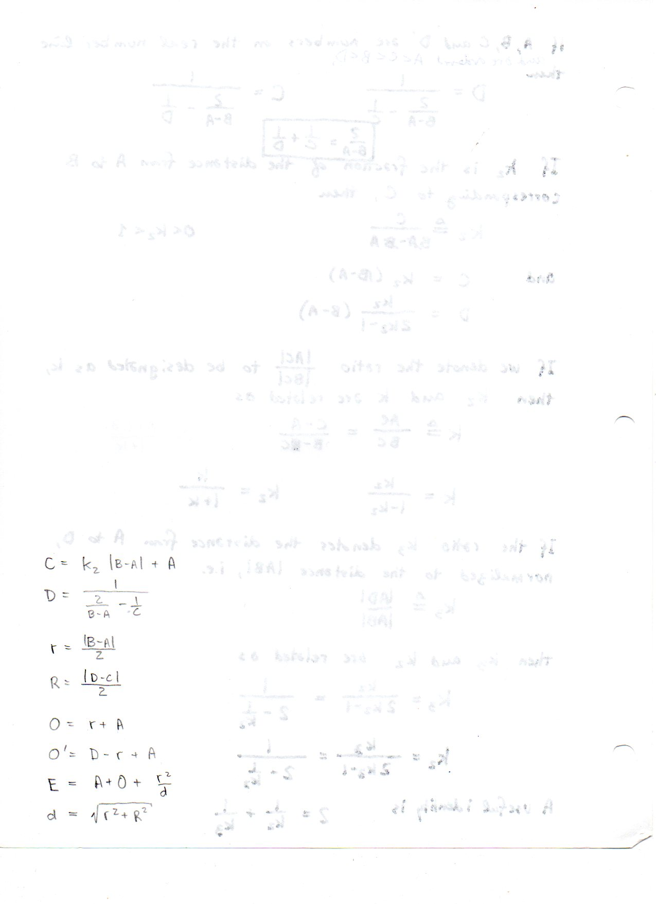
Folio 0151 0151.jpg resources/seelig/25_harmonic-conjugates
Diplomatic Mathematical & Geometric Transcription
Diplomatic Transcription — Folio 0151 (0151.jpg
Compact coordinate reference for plotting orthogonal harmonic circles.
\[\Pi_+ = \frac{1}{\kappa} + \kappa, \quad \Pi_- = \frac{1}{\kappa} - \kappa, \quad \Pi_+^2 - \Pi_-^2 = 4, \quad R = \frac{r}{2}\Pi_-, \quad d = \frac{r}{2}\Pi_+, \quad p = r\frac{\Pi_-}{\Pi_+}\]
Editorial & Symbolic Notes
Archival scan 0151.jpg F.25 Harmonic Conjugates (Page 12 of 28). Companion OpenDocument worksheet(s): Harmonic Conjugates HC Tables Apollonian Circles Coaxial Circles III.36 VI.3
Folio 0152 (Page 13 of 28): Right Triangle OPO’ Altitude & Projections (‘Very pretty!’)
[Folio 0152]
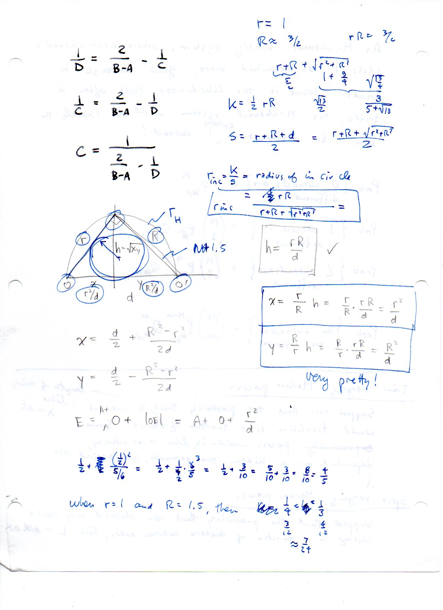
Folio 0152 0152.jpg resources/seelig/25_harmonic-conjugates
Diplomatic Mathematical & Geometric Transcription
Diplomatic Transcription — Folio 0152 (0152.jpg
Derives \(h = |PE| = rR/d\) , \(x = |OE| = r^2/d\) , \(y = |O'E| = R^2/d\) , and inradius \(r_{\text{inc}}\) .
\[\frac{|AC|}{|CB|} = \frac{|AD|}{|BD|} = k = \frac{1 + \kappa}{1 - \kappa}, \qquad |MC| \cdot |MD| = x y = r^2, \qquad \frac{2}{|AB|} = \frac{1}{|AC|} + \frac{1}{|AD|}\]
Editorial & Symbolic Notes
Archival scan 0152.jpg F.25 Harmonic Conjugates (Page 13 of 28). Companion OpenDocument worksheet(s): Harmonic Conjugates HC Tables Apollonian Circles Coaxial Circles III.36 VI.3
Folio 0153 (Page 14 of 28): Reverse Scrap Sheet (Markov Channel Notes)
[Folio 0153]
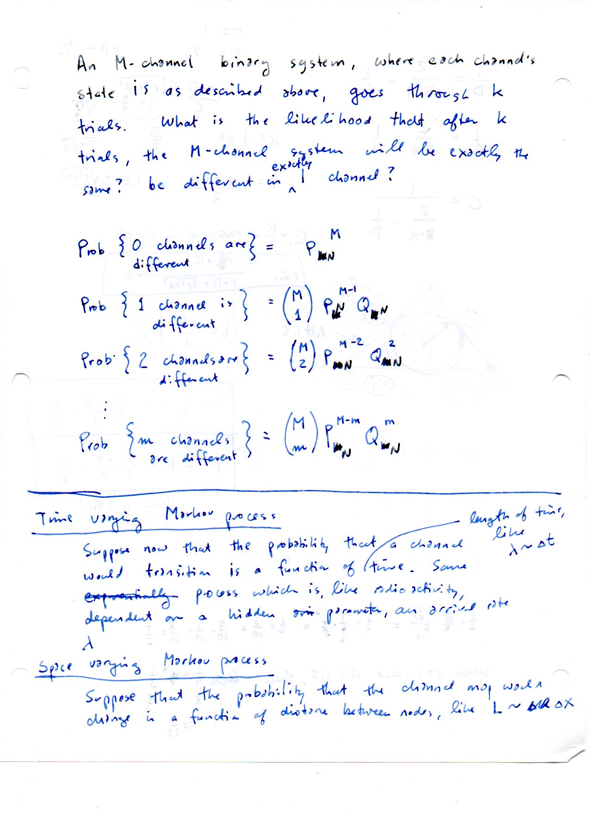
Folio 0153 0153.jpg resources/seelig/25_harmonic-conjugates
Diplomatic Mathematical & Geometric Transcription
Diplomatic Transcription — Folio 0153 (0153.jpg
Reverse side of scrap paper containing unrelated binary Markov channel equations.
\[\Pi_+ = \frac{1}{\kappa} + \kappa, \quad \Pi_- = \frac{1}{\kappa} - \kappa, \quad \Pi_+^2 - \Pi_-^2 = 4, \quad R = \frac{r}{2}\Pi_-, \quad d = \frac{r}{2}\Pi_+, \quad p = r\frac{\Pi_-}{\Pi_+}\]
Editorial & Symbolic Notes
Archival scan 0153.jpg F.25 Harmonic Conjugates (Page 14 of 28). Companion OpenDocument worksheet(s): Harmonic Conjugates HC Tables Apollonian Circles Coaxial Circles III.36 VI.3
Folio 0154 (Page 15 of 28): 12-Row Numerical Table for A = 0, B = 1
[Folio 0154]
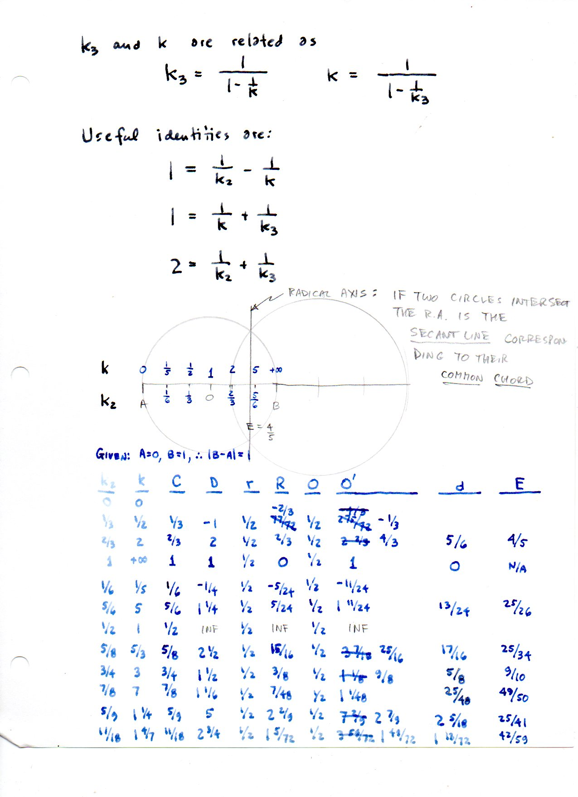
Folio 0154 0154.jpg resources/seelig/25_harmonic-conjugates
Diplomatic Mathematical & Geometric Transcription
Diplomatic Transcription — Folio 0154 (0154.jpg
Tabulates \(k, k_2, k_3\) and radical axis coordinates across 12 parameter values.
\[\frac{|AC|}{|CB|} = \frac{|AD|}{|BD|} = k = \frac{1 + \kappa}{1 - \kappa}, \qquad |MC| \cdot |MD| = x y = r^2, \qquad \frac{2}{|AB|} = \frac{1}{|AC|} + \frac{1}{|AD|}\]
Editorial & Symbolic Notes
Archival scan 0154.jpg F.25 Harmonic Conjugates (Page 15 of 28). Companion OpenDocument worksheet(s): Harmonic Conjugates HC Tables Apollonian Circles Coaxial Circles III.36 VI.3
Folio 0155 (Page 16 of 28): Two-Color Dimensioned Orthogonal Circles Diagram
[Folio 0155]
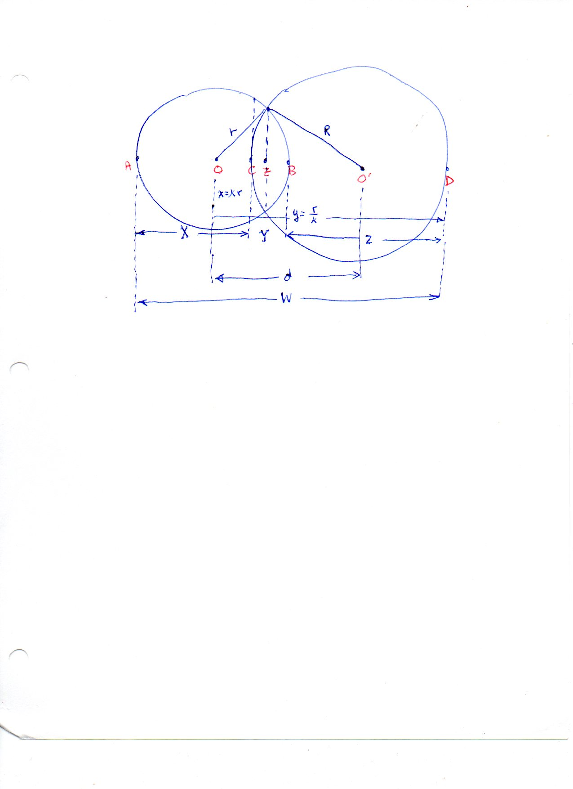
Folio 0155 0155.jpg resources/seelig/25_harmonic-conjugates
Diplomatic Mathematical & Geometric Transcription
Diplomatic Transcription — Folio 0155 (0155.jpg
Blue/red drawing of \(\Gamma_O(r)\) and \(\Gamma_{O'}(R)\) showing segments \(X, Y, Z, d, W\) .
\[\Pi_+ = \frac{1}{\kappa} + \kappa, \quad \Pi_- = \frac{1}{\kappa} - \kappa, \quad \Pi_+^2 - \Pi_-^2 = 4, \quad R = \frac{r}{2}\Pi_-, \quad d = \frac{r}{2}\Pi_+, \quad p = r\frac{\Pi_-}{\Pi_+}\]
Editorial & Symbolic Notes
Archival scan 0155.jpg F.25 Harmonic Conjugates (Page 16 of 28). Companion OpenDocument worksheet(s): Harmonic Conjugates HC Tables Apollonian Circles Coaxial Circles III.36 VI.3
Folio 0156 (Page 17 of 28): Master Diagram: Dual Relations & Internal Symmetry (FWS 6/20/2014)
[Folio 0156]
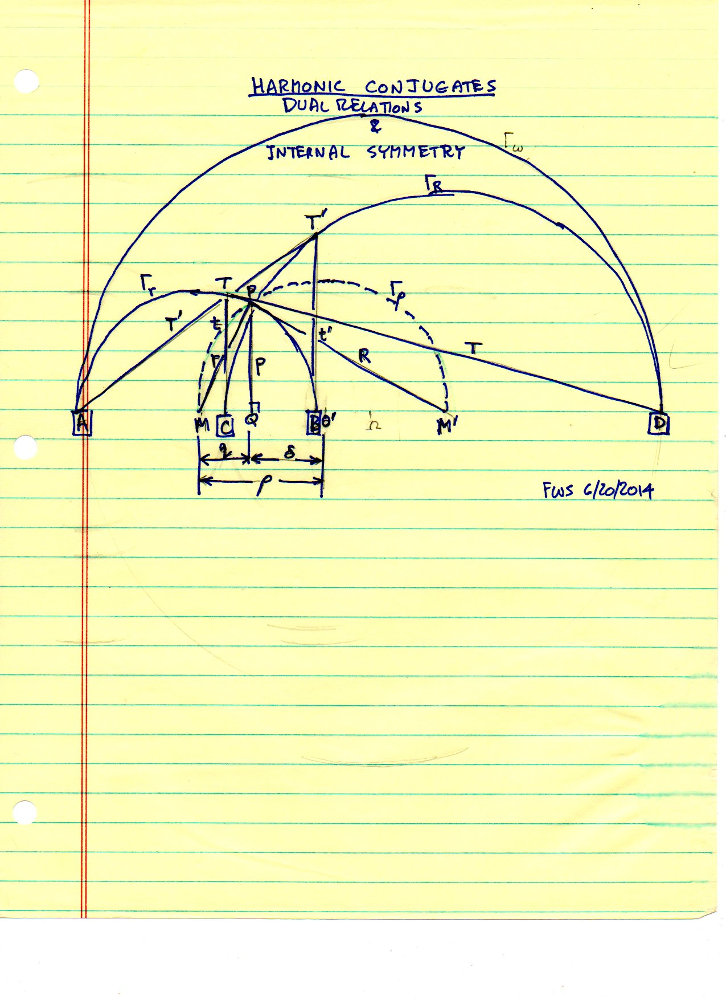
Folio 0156 0156.jpg resources/seelig/25_harmonic-conjugates
Diplomatic Mathematical & Geometric Transcription
Diplomatic Transcription — Folio 0156 (0156.jpg
Yellow legal-pad master construction of semicircles \(\Gamma_r, \Gamma_R, \Gamma_w, \Gamma_\rho\) and segments \(t, t', T, T', p, q, \delta, \rho\) .
\[\frac{|AC|}{|CB|} = \frac{|AD|}{|BD|} = k = \frac{1 + \kappa}{1 - \kappa}, \qquad |MC| \cdot |MD| = x y = r^2, \qquad \frac{2}{|AB|} = \frac{1}{|AC|} + \frac{1}{|AD|}\]
Editorial & Symbolic Notes
Archival scan 0156.jpg F.25 Harmonic Conjugates (Page 17 of 28). Companion OpenDocument worksheet(s): Harmonic Conjugates HC Tables Apollonian Circles Coaxial Circles III.36 VI.3
Folio 0157 (Page 18 of 28): Theorem 1: Duality Theorem (kappa’ = 1/k, k’ = 1/kappa)
[Folio 0157]
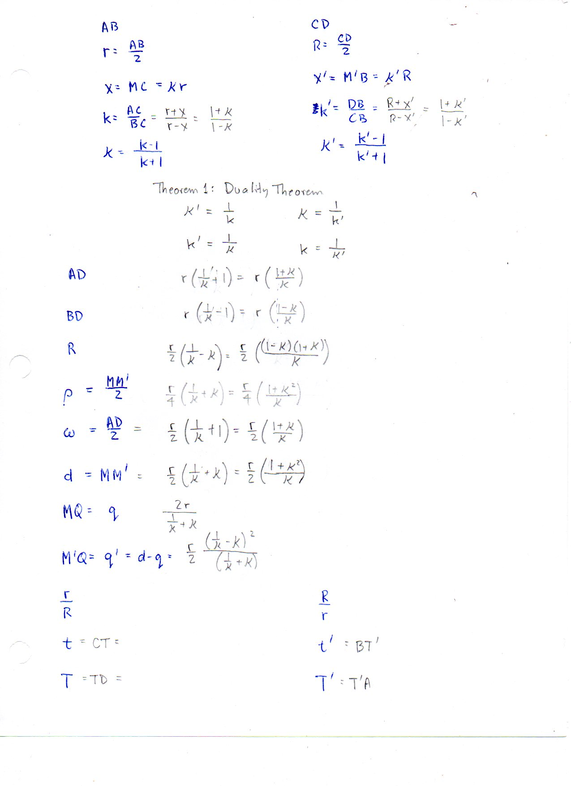
Folio 0157 0157.jpg resources/seelig/25_harmonic-conjugates
Diplomatic Mathematical & Geometric Transcription
Diplomatic Transcription — Folio 0157 (0157.jpg
States the duality between \((\Gamma_r, \kappa, k)\) and \((\Gamma_R, \kappa', k')\) and lists 8 segment formulas.
\[\Pi_+ = \frac{1}{\kappa} + \kappa, \quad \Pi_- = \frac{1}{\kappa} - \kappa, \quad \Pi_+^2 - \Pi_-^2 = 4, \quad R = \frac{r}{2}\Pi_-, \quad d = \frac{r}{2}\Pi_+, \quad p = r\frac{\Pi_-}{\Pi_+}\]
Editorial & Symbolic Notes
Archival scan 0157.jpg F.25 Harmonic Conjugates (Page 18 of 28). Companion OpenDocument worksheet(s): Harmonic Conjugates HC Tables Apollonian Circles Coaxial Circles III.36 VI.3
Folio 0158 (Page 19 of 28): Integer Parameterization r = 2mn, kappa = m/n & Example (3, 7)
[Folio 0158]
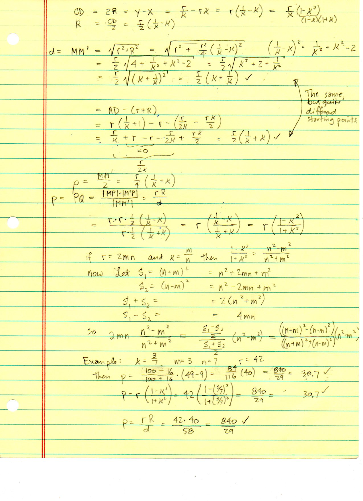
Folio 0158 0158.jpg resources/seelig/25_harmonic-conjugates
Diplomatic Mathematical & Geometric Transcription
Diplomatic Transcription — Folio 0158 (0158.jpg
Derives \(d = \frac{r}{2}(\kappa + 1/\kappa)\) and tests \(m=3, n=7, r=42 \implies R=40, d=58, p=840/29\) .
\[\frac{|AC|}{|CB|} = \frac{|AD|}{|BD|} = k = \frac{1 + \kappa}{1 - \kappa}, \qquad |MC| \cdot |MD| = x y = r^2, \qquad \frac{2}{|AB|} = \frac{1}{|AC|} + \frac{1}{|AD|}\]
Editorial & Symbolic Notes
Archival scan 0158.jpg F.25 Harmonic Conjugates (Page 19 of 28). Companion OpenDocument worksheet(s): Harmonic Conjugates HC Tables Apollonian Circles Coaxial Circles III.36 VI.3
Folio 0159 (Page 20 of 28): Projection q = MQ = 2*kappa*r/(1 + kappa^2)
[Folio 0159]
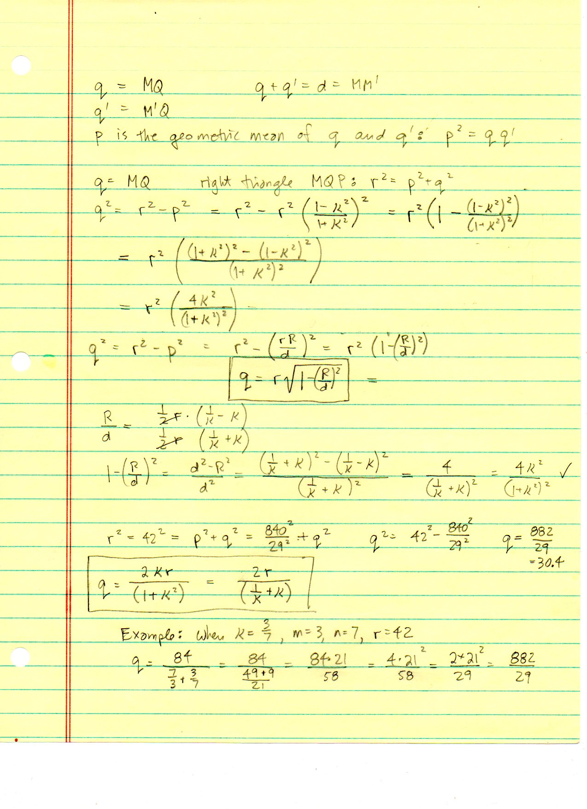
Folio 0159 0159.jpg resources/seelig/25_harmonic-conjugates
Diplomatic Mathematical & Geometric Transcription
Diplomatic Transcription — Folio 0159 (0159.jpg
Proves the formula for \(q = MQ\) and verifies \(q = 882/29 \approx 30.4\) for \((m,n)=(3,7)\) .
\[\Pi_+ = \frac{1}{\kappa} + \kappa, \quad \Pi_- = \frac{1}{\kappa} - \kappa, \quad \Pi_+^2 - \Pi_-^2 = 4, \quad R = \frac{r}{2}\Pi_-, \quad d = \frac{r}{2}\Pi_+, \quad p = r\frac{\Pi_-}{\Pi_+}\]
Editorial & Symbolic Notes
Archival scan 0159.jpg F.25 Harmonic Conjugates (Page 20 of 28). Companion OpenDocument worksheet(s): Harmonic Conjugates HC Tables Apollonian Circles Coaxial Circles III.36 VI.3
Folio 0160 (Page 21 of 28): Equivalence of Three Expressions for q’ = M’Q
[Folio 0160]
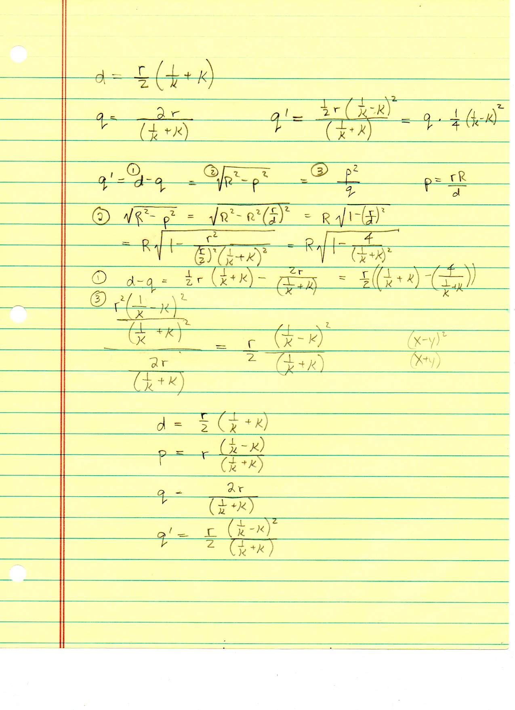
Folio 0160 0160.jpg resources/seelig/25_harmonic-conjugates
Diplomatic Mathematical & Geometric Transcription
Diplomatic Transcription — Folio 0160 (0160.jpg
Proves \(q' = d - q = \sqrt{R^2 - p^2} = p^2/q\) in terms of \(1/\kappa \pm \kappa\) .
\[\frac{|AC|}{|CB|} = \frac{|AD|}{|BD|} = k = \frac{1 + \kappa}{1 - \kappa}, \qquad |MC| \cdot |MD| = x y = r^2, \qquad \frac{2}{|AB|} = \frac{1}{|AC|} + \frac{1}{|AD|}\]
Editorial & Symbolic Notes
Archival scan 0160.jpg F.25 Harmonic Conjugates (Page 21 of 28). Companion OpenDocument worksheet(s): Harmonic Conjugates HC Tables Apollonian Circles Coaxial Circles III.36 VI.3
Folio 0161 (Page 22 of 28): Duplicate Scan of q’ Equivalence Proof
[Folio 0161]
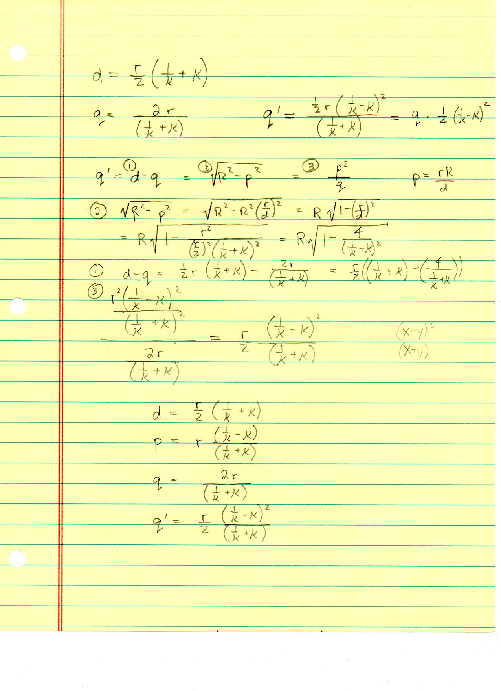
Folio 0161 0161.jpg resources/seelig/25_harmonic-conjugates
Diplomatic Mathematical & Geometric Transcription
Diplomatic Transcription — Folio 0161 (0161.jpg
Second scan of the \(q'\) equivalence derivation.
\[\Pi_+ = \frac{1}{\kappa} + \kappa, \quad \Pi_- = \frac{1}{\kappa} - \kappa, \quad \Pi_+^2 - \Pi_-^2 = 4, \quad R = \frac{r}{2}\Pi_-, \quad d = \frac{r}{2}\Pi_+, \quad p = r\frac{\Pi_-}{\Pi_+}\]
Editorial & Symbolic Notes
Archival scan 0161.jpg F.25 Harmonic Conjugates (Page 22 of 28). Companion OpenDocument worksheet(s): Harmonic Conjugates HC Tables Apollonian Circles Coaxial Circles III.36 VI.3
Folio 0162 (Page 23 of 28): Invariants Pi_plus and Pi_minus (Pi_plus^2 - Pi_minus^2 = 4)
[Folio 0162]
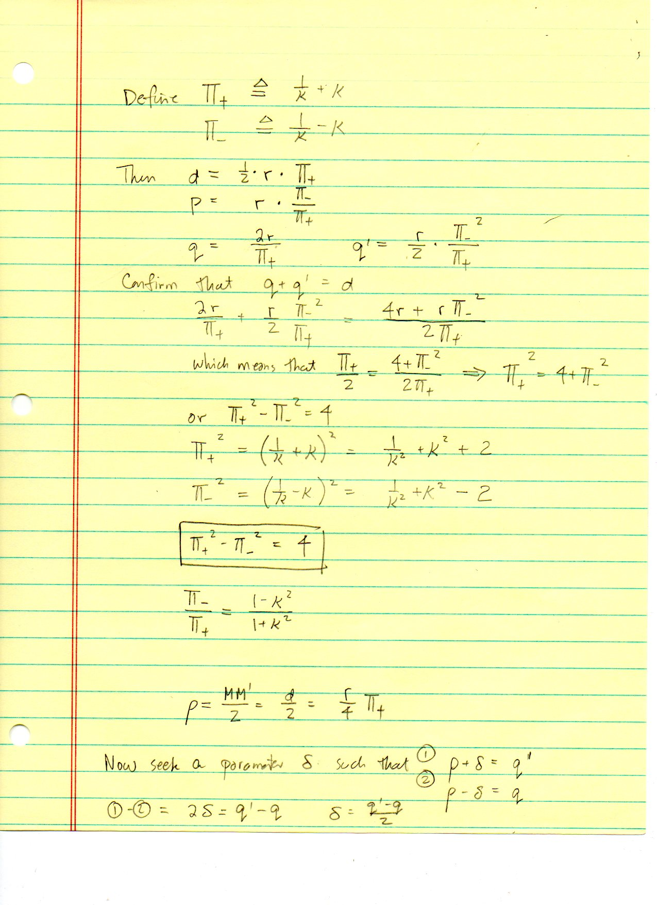
Folio 0162 0162.jpg resources/seelig/25_harmonic-conjugates
Diplomatic Mathematical & Geometric Transcription
Diplomatic Transcription — Folio 0162 (0162.jpg
Defines \(\Pi_\pm = \frac{1}{\kappa} \pm \kappa\) and expresses \(R, d, p, q, q', \delta\) in terms of \(\Pi_\pm\) .
\[\frac{|AC|}{|CB|} = \frac{|AD|}{|BD|} = k = \frac{1 + \kappa}{1 - \kappa}, \qquad |MC| \cdot |MD| = x y = r^2, \qquad \frac{2}{|AB|} = \frac{1}{|AC|} + \frac{1}{|AD|}\]
Editorial & Symbolic Notes
Archival scan 0162.jpg F.25 Harmonic Conjugates (Page 23 of 28). Companion OpenDocument worksheet(s): Harmonic Conjugates HC Tables Apollonian Circles Coaxial Circles III.36 VI.3
Folio 0163 (Page 24 of 28): Simplification of Midpoint Offset delta = (q’ - q)/2
[Folio 0163]
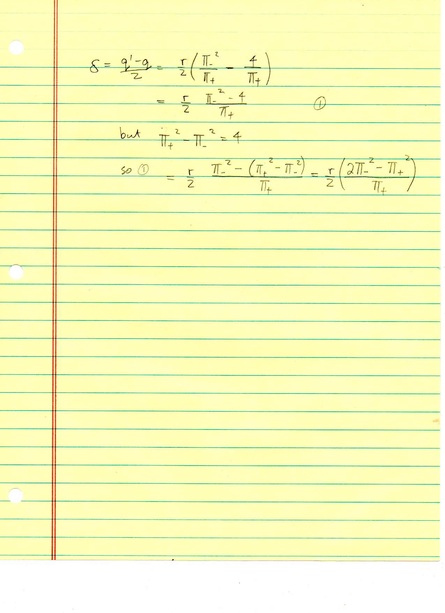
Folio 0163 0163.jpg resources/seelig/25_harmonic-conjugates
Diplomatic Mathematical & Geometric Transcription
Diplomatic Transcription — Folio 0163 (0163.jpg
Reduces \(\delta = \frac{r}{2}\frac{\Pi_-^2 - 4}{\Pi_+}\) .
\[\Pi_+ = \frac{1}{\kappa} + \kappa, \quad \Pi_- = \frac{1}{\kappa} - \kappa, \quad \Pi_+^2 - \Pi_-^2 = 4, \quad R = \frac{r}{2}\Pi_-, \quad d = \frac{r}{2}\Pi_+, \quad p = r\frac{\Pi_-}{\Pi_+}\]
Editorial & Symbolic Notes
Archival scan 0163.jpg F.25 Harmonic Conjugates (Page 24 of 28). Companion OpenDocument worksheet(s): Harmonic Conjugates HC Tables Apollonian Circles Coaxial Circles III.36 VI.3
Folio 0164 (Page 25 of 28): Dual Chords t = CT, t’ = BT’ and Tangents T, T’
[Folio 0164]
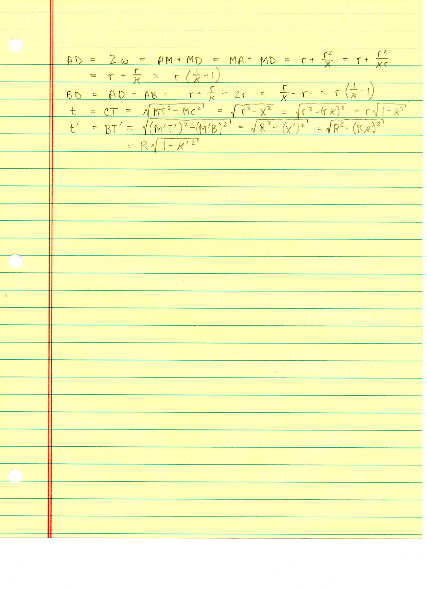
Folio 0164 0164.jpg resources/seelig/25_harmonic-conjugates
Diplomatic Mathematical & Geometric Transcription
Diplomatic Transcription — Folio 0164 (0164.jpg
Derives \(t = r\sqrt{1-\kappa^2}\) and \(t' = R\sqrt{1-{\kappa'}^2} = r\frac{1-\kappa}{\sqrt{\kappa}}\) .
\[\frac{|AC|}{|CB|} = \frac{|AD|}{|BD|} = k = \frac{1 + \kappa}{1 - \kappa}, \qquad |MC| \cdot |MD| = x y = r^2, \qquad \frac{2}{|AB|} = \frac{1}{|AC|} + \frac{1}{|AD|}\]
Editorial & Symbolic Notes
Archival scan 0164.jpg F.25 Harmonic Conjugates (Page 25 of 28). Companion OpenDocument worksheet(s): Harmonic Conjugates HC Tables Apollonian Circles Coaxial Circles III.36 VI.3
Folio 0165 (Page 26 of 28): Grid Summary Sheet of All 10 Symmetric Segment Formulas
[Folio 0165]
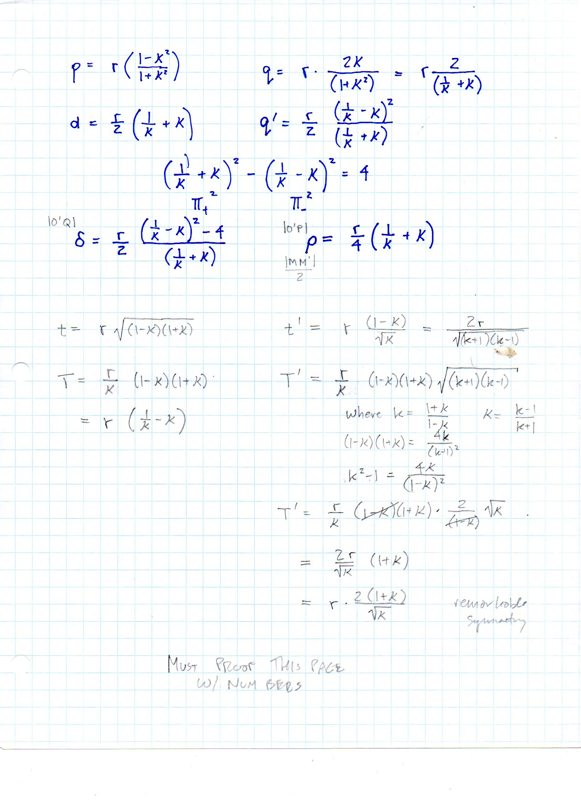
Folio 0165 0165.jpg resources/seelig/25_harmonic-conjugates
Diplomatic Mathematical & Geometric Transcription
Diplomatic Transcription — Folio 0165 (0165.jpg
Consolidates \(p, q, d, q', \delta, \rho, t, t', T, T'\) (‘remarkable symmetry’ ).
\[\Pi_+ = \frac{1}{\kappa} + \kappa, \quad \Pi_- = \frac{1}{\kappa} - \kappa, \quad \Pi_+^2 - \Pi_-^2 = 4, \quad R = \frac{r}{2}\Pi_-, \quad d = \frac{r}{2}\Pi_+, \quad p = r\frac{\Pi_-}{\Pi_+}\]
Editorial & Symbolic Notes
Archival scan 0165.jpg F.25 Harmonic Conjugates (Page 26 of 28). Companion OpenDocument worksheet(s): Harmonic Conjugates HC Tables Apollonian Circles Coaxial Circles III.36 VI.3
Folio 0166 (Page 27 of 28): Geometric Mean Proof that |BC| = r(1 - kappa)
[Folio 0166]
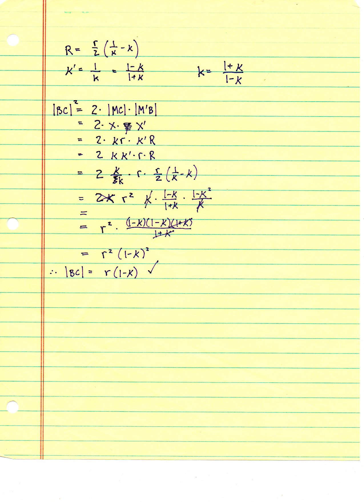
Folio 0166 0166.jpg resources/seelig/25_harmonic-conjugates
Diplomatic Mathematical & Geometric Transcription
Diplomatic Transcription — Folio 0166 (0166.jpg
Proves \(|BC|^2 = 2|MC|\cdot|M'B| = r^2(1-\kappa)^2\) .
\[\frac{|AC|}{|CB|} = \frac{|AD|}{|BD|} = k = \frac{1 + \kappa}{1 - \kappa}, \qquad |MC| \cdot |MD| = x y = r^2, \qquad \frac{2}{|AB|} = \frac{1}{|AC|} + \frac{1}{|AD|}\]
Editorial & Symbolic Notes
Archival scan 0166.jpg F.25 Harmonic Conjugates (Page 27 of 28). Companion OpenDocument worksheet(s): Harmonic Conjugates HC Tables Apollonian Circles Coaxial Circles III.36 VI.3
Folio 0167 (Page 28 of 28): External Tangent T’ = R*sqrt(k^2 - 1)
[Folio 0167]
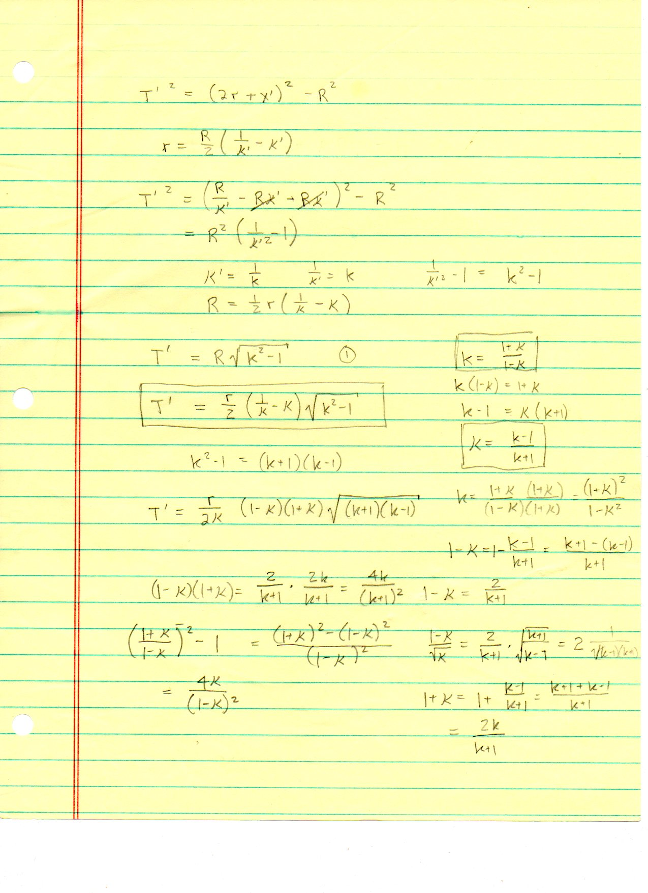
Folio 0167 0167.jpg resources/seelig/25_harmonic-conjugates
Diplomatic Mathematical & Geometric Transcription
Diplomatic Transcription — Folio 0167 (0167.jpg
Completes the derivation of \(T' = r\frac{2(1+\kappa)}{\sqrt{\kappa}}\) .
\[\Pi_+ = \frac{1}{\kappa} + \kappa, \quad \Pi_- = \frac{1}{\kappa} - \kappa, \quad \Pi_+^2 - \Pi_-^2 = 4, \quad R = \frac{r}{2}\Pi_-, \quad d = \frac{r}{2}\Pi_+, \quad p = r\frac{\Pi_-}{\Pi_+}\]
Editorial & Symbolic Notes
Archival scan 0167.jpg F.25 Harmonic Conjugates (Page 28 of 28). Companion OpenDocument worksheet(s): Harmonic Conjugates HC Tables Apollonian Circles Coaxial Circles III.36 VI.3